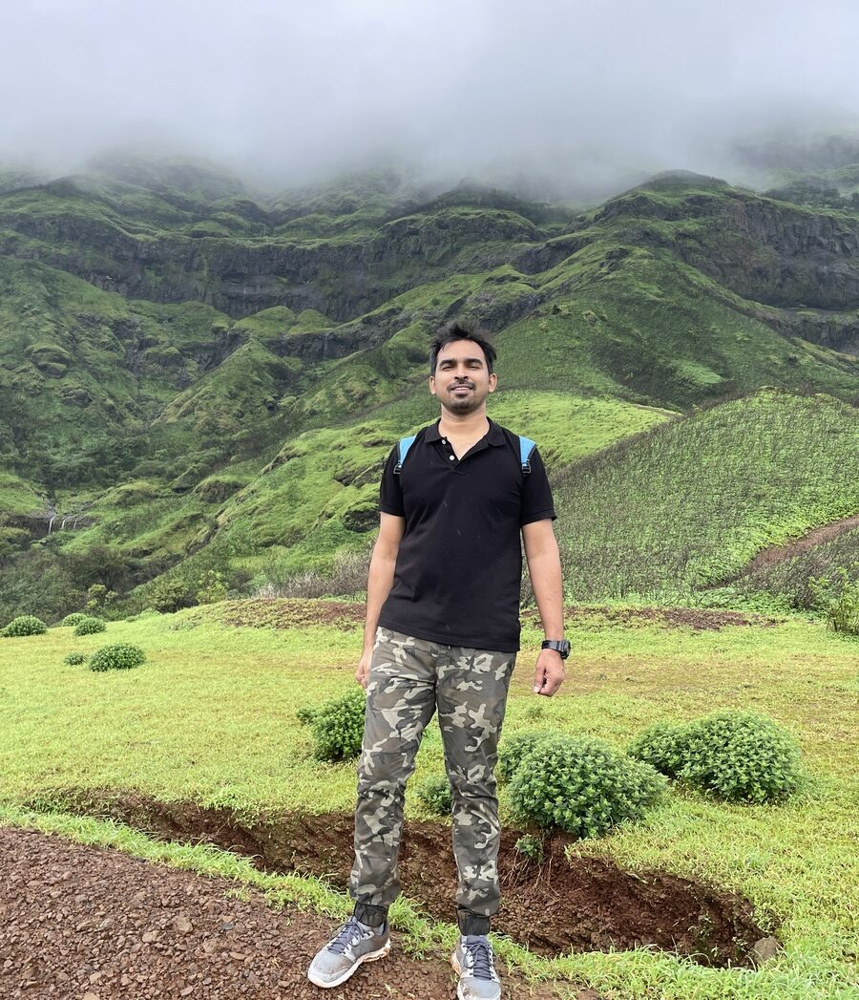
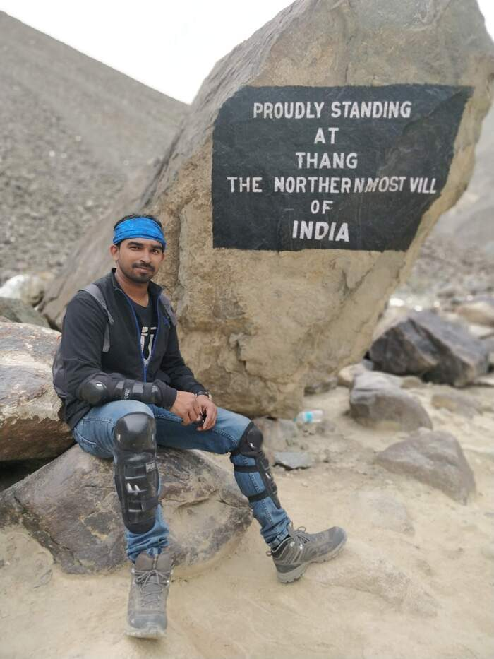
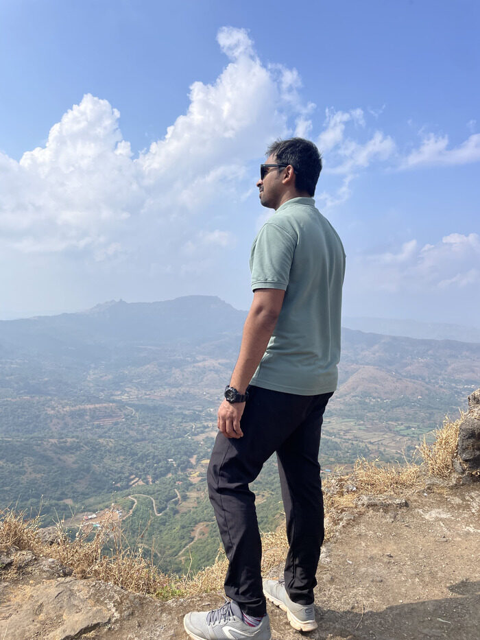

Data Science Manager at Michelin India. 12 years across automotive, supply chain, logistics, and financial services — currently focused on LangGraph-orchestrated agents, RAG architectures, and deep-learning time-series forecasting.

Three projects built to be run, not just read — each one works fully offline with zero API keys, and upgrades automatically the moment you add one.
I care whether a model survives contact with production, not just whether it beats a benchmark. Most of my work sits at the boundary between a working prototype and something reliable enough to hand to a planner or an operations team — which is why every project here ships with an evaluation harness, not just a demo.
When I'm not building forecasting agents, I'm usually travelling somewhere with a proper elevation gain, chasing the next adventure — treks, mountain roads, unfamiliar terrain — or lying flat on a hillside for a bit of stargazing once the fog clears.


Based in Pune, India — open to relocating worldwide. The fastest way to reach me is email.